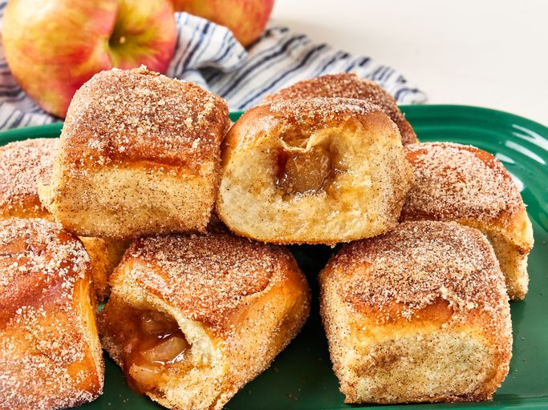

Apple Cider Hawaiian Roll Donut's

Try these apple cider stuffed Hawaiian rolls that are reminiscent of apple donuts. Enjoy the warm, fluffy texture and the sweet apple filling!
Ingredients:
- 1 12 Pack Hawaiian Rolls
- 1 cup apple pie filling
- 1/2 cup sugar
- 1 teaspoon cinnamon
- 1/4 teaspoon nutmeg
- 1/4 teaspoon alpine spice powder
- 5 tablespoons butter, divided
- 1 tablespoon butter, melted
Steps:
- Preheat your oven to 350°F (175°C).
- Separate Hawaiian rolls and cut a 1/2-inch slit in the side of each one. Use a finger or the end of a spoon to create a larger opening and a space large enough to fill each roll with about 1 tablespoon filling.
- Roughly chop apple pie filling and add to a bowl. Stir in 1 packet apple cider mix. Spoon filling into the prepared rolls.
- Melt 4 tablespoons butter and brush each roll on all sides with melted butter. Place rolls on a lined baking sheet.
- Bake rolls in the preheated oven until lightly toasted and golden brown, 12 to 14 minutes.
- Meanwhile, stir together remaining apple cider packet, sugar, and cinnamon in a shallow dish and melt remaining butter.
- Brush tops of rolls evenly with melted butter and coat each roll in sugar mixture.